Инцидент с американским беспилотником над Чёрным морем
Согласно Deutsche Welle, этот инцидент стал первым случаем со времён Холодной войны, когда американское воздушное судно потерпело крушение из-за воздействия российских самолётов
14 марта 2023 года российский истребитель Су-27 перехватил и повредил американский беспилотник MQ-9 Reaper, после чего БПЛА потерпел крушение в международных водах Чёрного моря
В заявлении Европейского командования ВС США говорится, что американский беспилотник MQ-9 Reaper летел над международными водами в Чёрном море выполняя «обычные операции». Примерно за 30—40 минут до падения беспилотника, поблизости были замечены два российских истребителя Су-27
Российские истребители несколько раз сбрасывали топливо на американский беспилотник. Примерно в 7:03 утра по центральноевропейскому времени, один из самолётов повредил винт беспилотника, и он начал снижаться в режиме планёра. Потеряв управление, операторы были вынуждены затопить БПЛА в международных водах Чёрного моря, удалённо уничтожив при этом программное обеспечение беспилотника, дабы оно не попало в руки вероятного противника
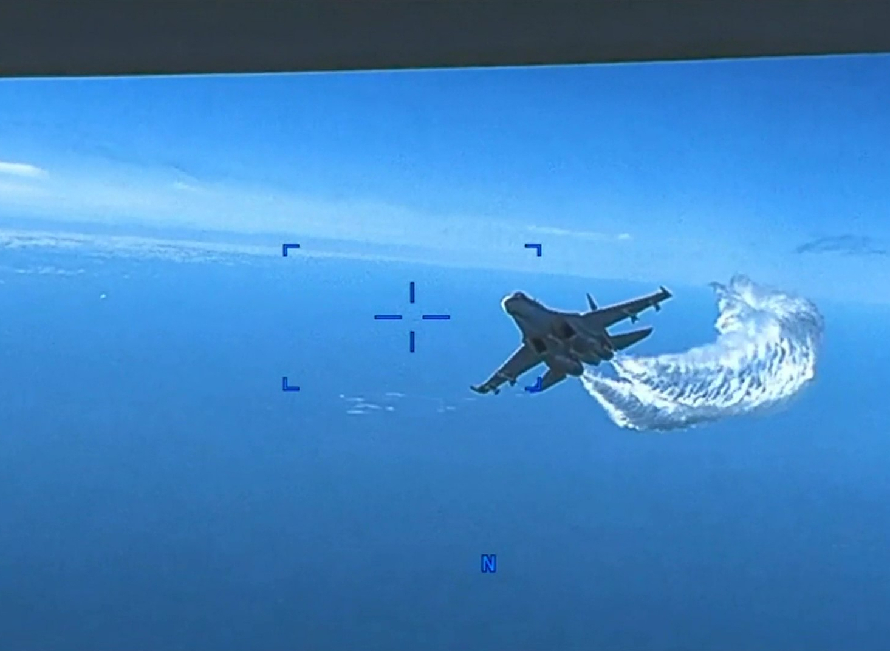
2023-03-14
Землетрясение в Марокко
Сообщается о по меньшей мере 2946 погибших и не менее 5530 раненых; по меньшей мере 1404 человек получили тяжёлые ранения. Землетрясение привело к масштабным разрушениям
Землетрясение произошло 8 сентября в 23:11 по местному времени. Его эпицентр находился в районе Игиль, расположенном в провинции Эль-Хауз, которая входит в регион Марракеш — Сафи. Как сообщает Геологическая служба США, землетрясение имело механизм очага, указывающий на образование наклонно-надвигового разлома под Высоким Атласом
По меньшей мере 2946 человека погибли и свыше 5530 были ранены; по меньшей мере 1404 человек получили тяжёлые ранения. Большинство погибших находились в провинциях Эль-Хауз и Тарудант
В Марокко был объявлен трёхдневный траур. Король Мухаммед VI санкционировал развёртывание армии Марокко в различных затронутых землетрясением городах. Африканская конфедерация футбола отложила проведение отборочного матча на Кубок африканских наций 2023 между Марокко и Либерией, который был запланирован на 9 сентября
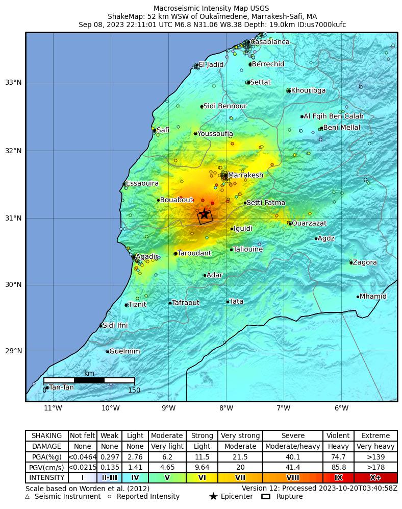
2023-09-08
Вояджер-2
Первый и единственный земной космический аппарат, достигший Урана (в январе 1986 года) и Нептуна (в августе 1989 года). «Вояджер-2» более 25 лет удерживал рекорд по дальности достигнутого и изученного объекта
Действующий космический зонд, запущенный НАСА 20 августа 1977 года в рамках программы «Вояджер» для исследований дальних планет Солнечной системы. Первый и единственный земной космический аппарат, достигший Урана (в январе 1986 года) и Нептуна (в августе 1989 года). «Вояджер-2» более 25 лет удерживал рекорд по дальности достигнутого и изученного объекта Солнечной системы, пока его не превзошёл космический зонд «Новые горизонты», достигший Плутона (в июле 2015 года) и Аррокота (в январе 2019 года).
«Вояджер-2» показал, что на обоих полюсах Урана температура оказалась одинаковой, хотя только один освещался Солнцем. Исследователи сделали вывод о наличии механизма передачи тепла из одной части планеты к другой. В среднем температура Урана составляет 59 К, или -214 °C
28 июля 2023 года НАСА сообщило об утрате связи с «Вояджером-2». Причиной стало непреднамеренное отклонение оси антенны аппарата от направления на Землю на 2°, вызванное серией команд, переданных 21 июля. В результате «Вояджер-2» не мог принимать команды с Земли.
С помощью той же сети антенн группа управления «Вояджером-2» попыталась с повышенной мощностью передать аппарату команду на возвращение нормальной ориентации антенны, что привело к восстановлению связи 4 августа. Принятые телеметрические и научные данные указывают, что «Вояджер-2» функционирует нормально
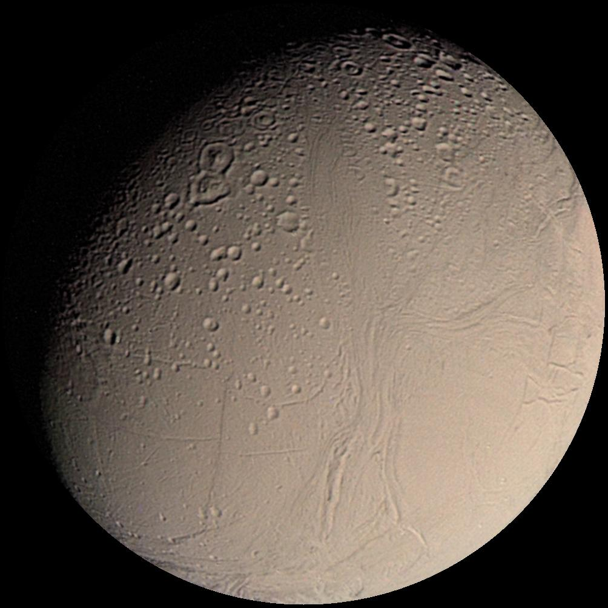
2023-08-18
Взрыв на космодроме "Байконур"
Во время подготовки к запуску ракеты "Протон" на космодроме "Байконур" произошел взрыв, убивший несколько человек и приведший к разрушению нескольких пусковых установок. Это привело к приостановке запусков на космодроме и серьезным изменениям в космической программе России.
В тот день, во время попытки запуска ракеты "Протон" с космодрома "Байконур" в Казахстане, произошел внезапный взрыв, разрушивший несколько пусковых установок и приведший к гибели шести человек, включая французских инженеров. Взрыв также нанес серьезные повреждения инфраструктуре космодрома.
Эта трагедия остановила запуски ракет на космодроме на продолжительное время, вызвав волну вопросов о безопасности и технической надежности в космической программе России. Инцидент также поднял важные вопросы о необходимости улучшения систем безопасности на космодромах для предотвращения подобных происшествий в будущем.
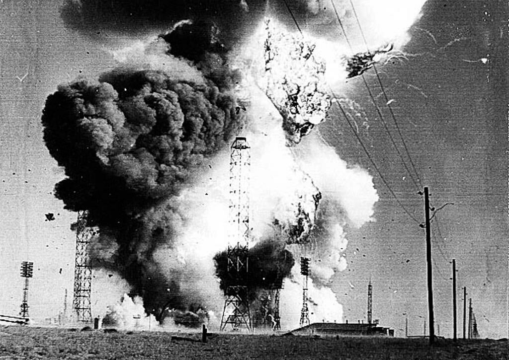
2000-10-27
Выборы президента США 2000 года
Выборы президента США 2000 года были одними из наиболее оспариваемых в истории Соединенных Штатов. Их дата - 2000-11-07
На выборах участвовали Джордж Буш-младший от Республиканской партии и Ал Гор от Демократической партии. Голосование в Флориде стало ключевым моментом, поскольку победа в этом штате определяла победителя во всем президентском выборе. Результаты голосования во Флориде были крайне тесными и вызвали неоднозначность.
После завершения голосования в Флориде и последующих подсчетов, начались правовые споры и судебные разбирательства из-за несовершенств в подсчете голосов, использования избирательных машин и спорных бюллетеней. Этот спор продолжался несколько недель.
В конечном итоге, дело дошло до Верховного суда США. 2000-12-12 Верховный суд принял решение остановить пересчет голосов во Флориде, что формально привело к победе Джорджа Буша. Это решение было принято большинством судей, что прекратило споры и привело к присяге Джорджа Буша-младшего на пост президента. Этот выбор вызвал широкие обсуждения о прозрачности и справедливости избирательной системы США.
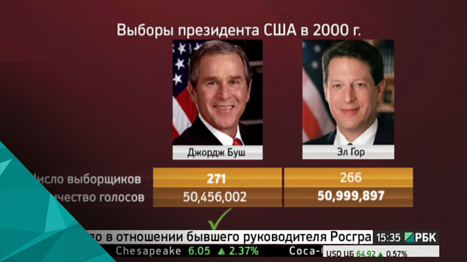
2000-11-07
катастрофа подводной лодки "Курск"
После взрыва, подводная лодка была потеряна из виду на дне моря. Российские власти начали поисково-спасательную операцию, но первые попытки связи с экипажем провалились. В течение нескольких дней после катастрофы, попытки спасти выживших были неуспешными.
12 августа 2000 года российская атомная подводная лодка "Курск" потерпела крупную катастрофу во время учений в Баренцевом море. Взрыв на борту произошел в результате неисправности в торпедном отсеке, что привело к гибели всех 118 членов экипажа.
После взрыва, подводная лодка была потеряна из виду на дне моря. Российские власти начали поисково-спасательную операцию, но первые попытки связи с экипажем провалились. В течение нескольких дней после катастрофы, попытки спасти выживших были неуспешными.
Часть экипажа, находившегося в другой части подлодки, пыталась выжить, но из-за недостатка кислорода и невозможности обеспечить контакт с внешним миром, все попытки спасения провалились. Подлодка была обнаружена только спустя несколько дней после катастрофы, но спасти выживших уже не удалось.
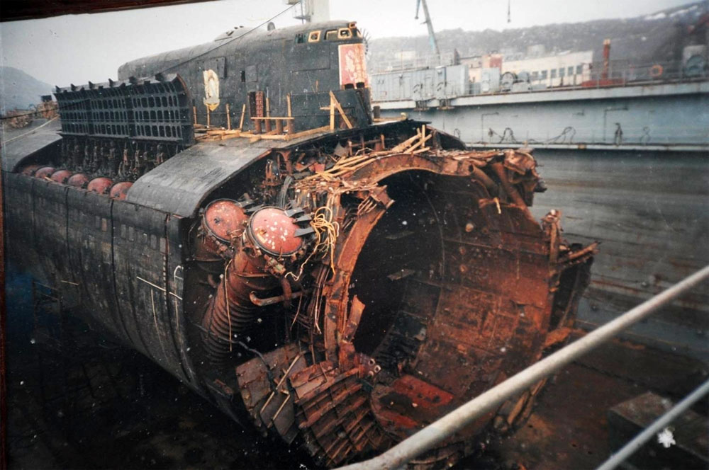
2000-08-12
11 сентября: Атаки на Всемирный торговый центр и Пентагон
Группа террористов, связанных с аль-Каидой, захватила четыре пассажирских самолета. Два из них врезались в башни Всемирного торгового центра в Нью-Йорке, третий самолет столкнулся с Пентагоном в Вашингтоне. Четвертый самолет, после борьбы пассажиров, упал в поле в Пенсильвании.
Террористические атаки были осуществлены группой террористов, связанных с аль-Каидой, на территории США. Четыре пассажирских самолета были захвачены. Два из них врезались в башни-близнецы Всемирного торгового центра в Нью-Йорке, третий самолет столкнулся с Пентагоном в Вашингтоне, а четвертый самолет, после борьбы пассажиров с террористами, упал в поле в штате Пенсильвания.
Атаки привели к разрушению башен-близнецов и коллапсу обоих зданий. Это вызвало гибель более 3 тысяч человек, включая гражданских лиц, пожарных, полицейских и спасателей, и стали символом трагедии и героизма.
После этих событий началась широкомасштабная международная борьба против терроризма, включая военные операции, изменения в политике безопасности и разработку новых мер по защите гражданских прав и безопасности.
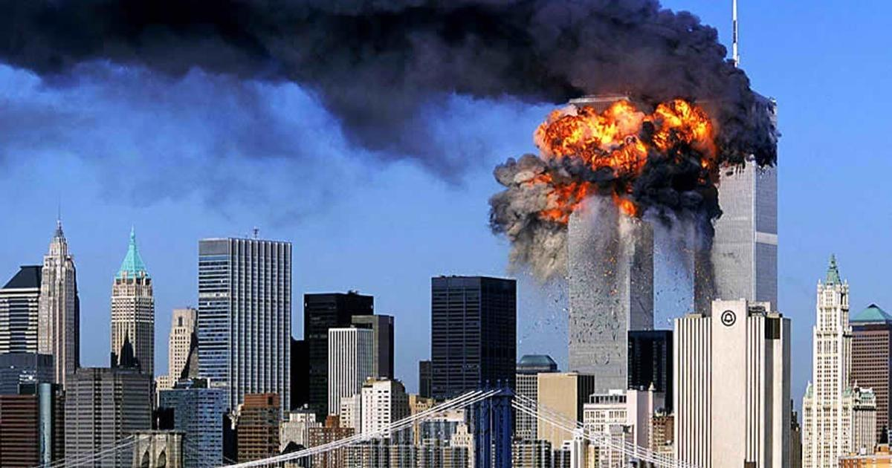
2001-09-11
Война в Афганистане
Целью войны было свержение талибанского режима и уничтожение базы аль-Каиды. Кампания включала в себя авиационные удары, спецоперации и военные операции совместно с афганскими оппозиционными силами.
После терактов 11 сентября, США считали, что организация аль-Каида, находящаяся под защитой талибов в Афганистане, стоит за планированием и осуществлением атак. В ответ на это, 7 октября 2001 года, США начали операцию "Бесконечная свобода" (Operation Enduring Freedom) в Афганистане.
Целью войны было свержение талибанского режима и уничтожение базы аль-Каиды. Кампания включала в себя авиационные удары, спецоперации и военные операции совместно с афганскими оппозиционными силами.
Военные действия привели к свержению талибанского правительства в Кабуле и началу долгого периода конфликта и войны в Афганистане. Это стало началом длительной военной кампании, продолжавшейся десятилетиями и включавшей в себя различные этапы военных операций, управляемых США и их союзниками.
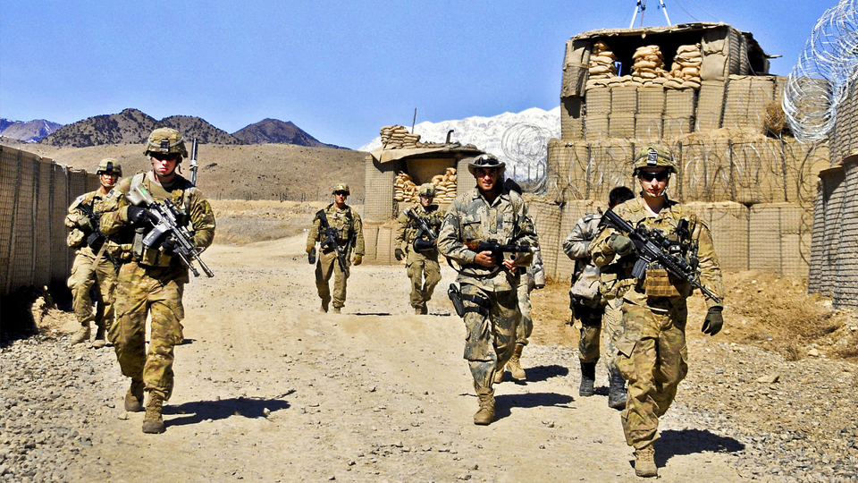
2001-10-07
Договор о дальнемирных ракетах (ДРСМ)
Соглашение предусматривало снижение числа ядерных боеголовок на боевых ракетах и бомбардировщиках. Оно также ставило предел на число развернутых и готовых к использованию ядерных ракет, способных достичь дальние дистанции.
Этот договор был подписан между США и Россией. Он был направлен на ограничение и контроль над вооружениями и важен для снижения напряженности в мире. ДРСМ стал продолжением ряда договоренностей, нацеленных на ограничение стратегических ядерных вооружений и создание мер по контролю за ними.
Соглашение предусматривало снижение числа ядерных боеголовок на боевых ракетах и бомбардировщиках. Оно также ставило предел на число развернутых и готовых к использованию ядерных ракет, способных достичь дальние дистанции.
Подписание этого договора считается важным шагом для снижения ядерной угрозы и обеспечения безопасности на мировом уровне.
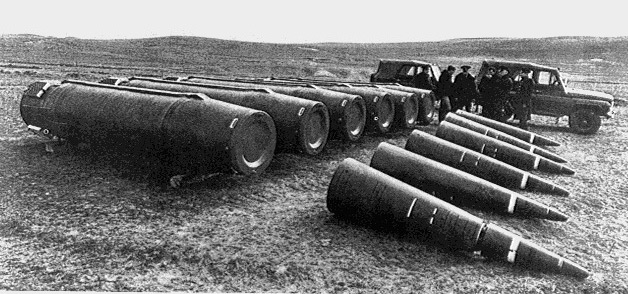
2001-12-08
Введение евро в наличном обращении
Это событие ознаменовало конец национальных валют в 12 странах Европейского союза, которые приняли евро в качестве общей валюты. Банкноты и монеты евро стали официальным платежным средством для миллионов
Это событие ознаменовало конец национальных валют в 12 странах Европейского союза, которые приняли евро в качестве общей валюты. Банкноты и монеты евро стали официальным платежным средством для миллионов европейцев, заменив национальные деньги в Австрии, Бельгии, Финляндии, Франции, Германии, Греции, Ирландии, Италии, Люксембурге, Нидерландах, Португалии и Испании.
Это событие имело огромное значение для экономического единства Европы, упрощая торговлю и финансовые операции между странами, снижая издержки на обмен валют и создавая единую финансовую систему. Введение евро также стало символом интеграции и единства в Европе.
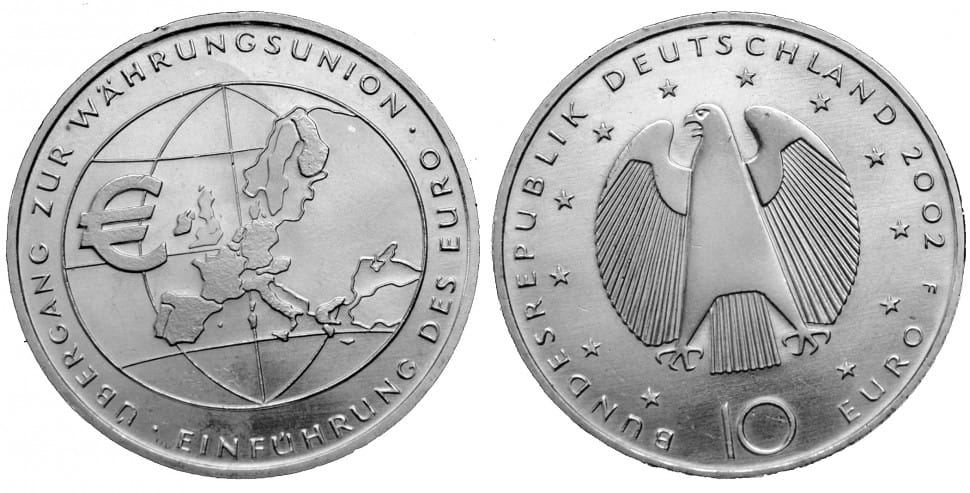
2002-01-01
Создание Международного Уголовного Суда
Создание МУСа стало важным шагом в сторону гарантирования справедливости и привлечения к ответственности тех, кто совершает тяжкие преступления против человечности, и оно призвано способствовать миру и справедливости в мировой практике права.
МУС был создан с целью рассмотрения дел по вопросам геноцида, военных преступлений, преступлений против человечности и агрессии, когда национальные суды не могут или не хотят их рассматривать. Это был исторический момент в области международного права и правосудия.
Суд расположен в Гааге, Нидерланды, и является независимым органом, не подчиненным какому-либо государству. Он был создан по Римскому статуту и является инструментом для установления ответственности за наиболее серьезные преступления, имеющие международный характер.
Создание МУСа стало важным шагом в сторону гарантирования справедливости и привлечения к ответственности тех, кто совершает тяжкие преступления против человечности, и оно призвано способствовать миру и справедливости в мировой практике права.

2002-07-01
Начало строительства Международной космической станции
Строительство МКС представляло собой совместное усилие множества стран и космических агентств, таких как NASA, Роскосмос, ESA, JAXA и других. Это сотрудничество отразило мировую поддержку и сотрудничество в освоении космоса.
В этот день космический корабль "Прогресс М-47" успешно доставил первые модули для строительства МКС. Этот момент стал отправной точкой для создания станции, которая стала крупнейшим и наиболее сложным международным космическим проектом.
Строительство МКС представляло собой совместное усилие множества стран и космических агентств, таких как NASA, Роскосмос, ESA, JAXA и других. Это сотрудничество отразило мировую поддержку и сотрудничество в освоении космоса.
МКС стала лабораторией для различных исследований в микрогравитационной среде, медицинских и биологических экспериментов, а также платформой для научных исследований в области астрономии и космической физики. Это стало важным шагом в исследовании космоса и понимании его влияния на человечество.
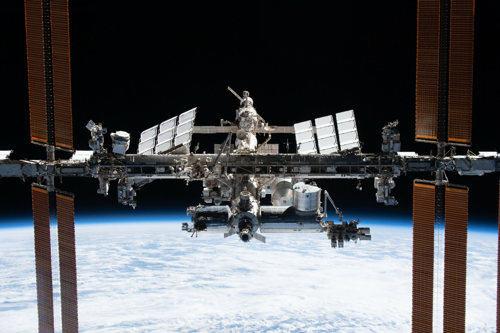
2002-10-20
Вторжение коалиции в Ирак
20 марта 2003 года коалиция под руководством США начала вторжение в Ирак, в рамках операции "Иракская свобода". Это вторжение привело к свержению режима Саддама Хусейна и началу длительного периода конфликта и нестабильности в Ираке.
Это вторжение было проведено коалицией стран под руководством США, включая Великобританию, Австралию, Польшу и других союзников. Оно стало частью операции под названием "Иракская свобода". Главной целью было свержение режима Саддама Хусейна, которого заподозрили в владении массовым уничтожением оружия, что позднее не было подтверждено.
Вторжение началось бомбардировками и военными операциями по всей стране, включая столицу Багдад. Кампания вызвала значительные разрушения инфраструктуры Ирака и вела к смерти тысяч людей.
В результате вторжения Саддам Хусейн был свергнут, а страна оказалась в долгосрочном состоянии нестабильности. Это вторжение стало предметом широких обсуждений и споров как в самой коалиции, так и в мировом сообществе по поводу его законности и последствий для региона.
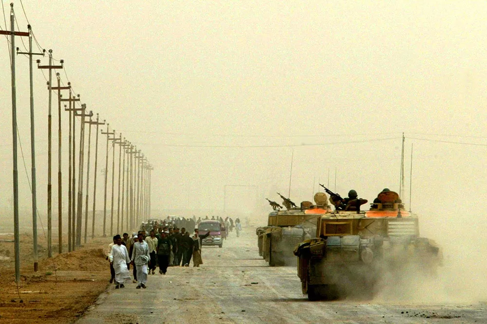
2003-03-20
Запуск зонда "Марс Экспресс"
Миссия "Марс Экспресс" продолжалась вплоть до сегодняшнего дня, принеся значительные научные открытия и изображения планеты. Это был важный шаг для ESA в исследовании космоса и планеты Марс.
"Марс Экспресс" был разработан с целью изучения Марса. Зонд был запущен для исследования атмосферы, климата, геологии и поверхности планеты. Он также проводил исследования воды и ее возможного присутствия в виде льда или жидкости.
Миссия "Марс Экспресс" продолжалась вплоть до сегодняшнего дня, принеся значительные научные открытия и изображения планеты. Это был важный шаг для ESA в исследовании космоса и планеты Марс.
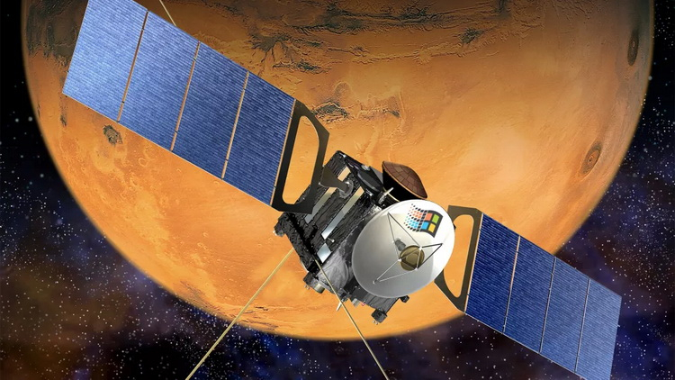
2003-06-02
Эпидемия тяжелого острого респираторного синдрома (SARS)
SARS вызывался коронавирусом, передаваемым через капли кашля и чихания, что приводило к острой респираторной болезни. Вспышка началась в провинции Гуандун на юге Китая и затем быстро распространилась на другие страны, включая Гонконг, Канаду, Сингапур и другие.
SARS вызывался коронавирусом, передаваемым через капли кашля и чихания, что приводило к острой респираторной болезни. Вспышка началась в провинции Гуандун на юге Китая и затем быстро распространилась на другие страны, включая Гонконг, Канаду, Сингапур и другие.
Симптомы включали высокую температуру, кашель, затрудненное дыхание, что могло привести к тяжелым осложнениям и смерти. Вирус вызвал панику и тревогу во всем мире из-за его быстрого распространения и высокой смертности.
Многие страны приняли экстренные меры по контролю за эпидемией, включая карантин, медицинские проверки и предоставление рекомендаций о предотвращении заражения. Благодаря широкому развертыванию предосторожностей и коллективным усилиям, эпидемия была в конечном итоге сдержана.
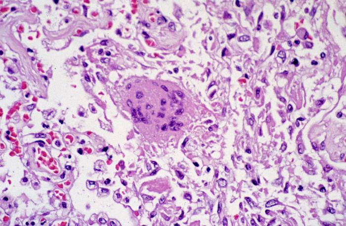
2003-10-10